Summary
This experiment investigates sleep quality optimization. Central composite design to maximize sleep quality score and minimize wake-ups by tuning room temperature, screen cutoff time, and caffeine cutoff hour.
The design varies 3 factors: room temp (C), ranging from 16 to 22, screen cutoff (min), ranging from 30 to 120, and caffeine cutoff (hrs_before), ranging from 6 to 14. The goal is to optimize 2 responses: sleep score (pts) (maximize) and wake count (count) (minimize). Fixed conditions held constant across all runs include bedtime = 22:30, wake time = 06:30.
A Central Composite Design (CCD) was selected to fit a full quadratic response surface model, including curvature and interaction effects. With 3 factors this produces 22 runs including center points and axial (star) points that extend beyond the factorial range.
Quadratic response surface models were fitted to capture potential curvature and factor interactions. The RSM contour plots below visualize how pairs of factors jointly affect each response.
Key Findings
For sleep score, the most influential factors were caffeine cutoff (41.0%), screen cutoff (31.1%), room temp (28.0%). The best observed value was 80.0 (at room temp = 19, screen cutoff = 75, caffeine cutoff = 10).
For wake count, the most influential factors were screen cutoff (37.9%), caffeine cutoff (33.5%), room temp (28.6%). The best observed value was 1.9 (at room temp = 22, screen cutoff = 120, caffeine cutoff = 6).
Recommended Next Steps
- Run confirmation experiments at the predicted optimal settings to validate the model.
- Consider whether any fixed factors should be varied in a future study.
Experimental Setup
Factors
| Factor | Low | High | Unit |
|---|
room_temp | 16 | 22 | C |
screen_cutoff | 30 | 120 | min |
caffeine_cutoff | 6 | 14 | hrs_before |
Fixed: bedtime = 22:30, wake_time = 06:30
Responses
| Response | Direction | Unit |
|---|
sleep_score | ↑ maximize | pts |
wake_count | ↓ minimize | count |
Configuration
{
"metadata": {
"name": "Sleep Quality Optimization",
"description": "Central composite design to maximize sleep quality score and minimize wake-ups by tuning room temperature, screen cutoff time, and caffeine cutoff hour"
},
"factors": [
{
"name": "room_temp",
"levels": [
"16",
"22"
],
"type": "continuous",
"unit": "C"
},
{
"name": "screen_cutoff",
"levels": [
"30",
"120"
],
"type": "continuous",
"unit": "min"
},
{
"name": "caffeine_cutoff",
"levels": [
"6",
"14"
],
"type": "continuous",
"unit": "hrs_before"
}
],
"fixed_factors": {
"bedtime": "22:30",
"wake_time": "06:30"
},
"responses": [
{
"name": "sleep_score",
"optimize": "maximize",
"unit": "pts"
},
{
"name": "wake_count",
"optimize": "minimize",
"unit": "count"
}
],
"settings": {
"operation": "central_composite",
"test_script": "use_cases/107_sleep_quality/sim.sh"
}
}
Experimental Matrix
The Central Composite Design produces 22 runs. Each row is one experiment with specific factor settings.
| Run | room_temp | screen_cutoff | caffeine_cutoff |
|---|
| 1 | 19 | 75 | 10 |
| 2 | 22 | 30 | 14 |
| 3 | 16 | 120 | 6 |
| 4 | 19 | 157.158 | 10 |
| 5 | 19 | 75 | 10 |
| 6 | 13.5228 | 75 | 10 |
| 7 | 19 | 75 | 2.69703 |
| 8 | 19 | 75 | 10 |
| 9 | 22 | 120 | 6 |
| 10 | 24.4772 | 75 | 10 |
| 11 | 19 | 75 | 10 |
| 12 | 19 | -7.15838 | 10 |
| 13 | 19 | 75 | 10 |
| 14 | 16 | 30 | 14 |
| 15 | 19 | 75 | 10 |
| 16 | 22 | 30 | 6 |
| 17 | 19 | 75 | 17.303 |
| 18 | 22 | 120 | 14 |
| 19 | 19 | 75 | 10 |
| 20 | 16 | 30 | 6 |
| 21 | 16 | 120 | 14 |
| 22 | 19 | 75 | 10 |
Step-by-Step Workflow
1
Preview the design
$ doe info --config use_cases/107_sleep_quality/config.json
2
Generate the runner script
$ doe generate --config use_cases/107_sleep_quality/config.json \
--output use_cases/107_sleep_quality/results/run.sh --seed 42
3
Execute the experiments
$ bash use_cases/107_sleep_quality/results/run.sh
4
Analyze results
$ doe analyze --config use_cases/107_sleep_quality/config.json
5
Get optimization recommendations
$ doe optimize --config use_cases/107_sleep_quality/config.json
6
Multi-objective optimization
With 2 competing responses, use --multi to find the best compromise via Derringer–Suich desirability.
$ doe optimize --config use_cases/107_sleep_quality/config.json --multi
7
Generate the HTML report
$ doe report --config use_cases/107_sleep_quality/config.json \
--output use_cases/107_sleep_quality/results/report.html
Features Exercised
| Feature | Value |
|---|
| Design type | central_composite |
| Factor types | continuous (all 3) |
| Arg style | double-dash |
| Responses | 2 (sleep_score ↑, wake_count ↓) |
| Total runs | 22 |
Analysis Results
Generated from actual experiment runs using the DOE Helper Tool.
Response: sleep_score
Top factors: caffeine_cutoff (41.0%), screen_cutoff (31.1%), room_temp (28.0%).
ANOVA
| Source | DF | SS | MS | F | p-value |
|---|
| Source | DF | SS | MS | F | p-value |
| room_temp | 4 | 109.5000 | 27.3750 | 0.324 | 0.8552 |
| screen_cutoff | 4 | 139.3333 | 34.8333 | 0.412 | 0.7961 |
| caffeine_cutoff | 4 | 286.0833 | 71.5208 | 0.846 | 0.5303 |
| Lack | of | Fit | 2 | 173.2083 | 86.6042 |
| Pure | Error | 7 | 591.8750 | | |
| Error | 9 | 765.0833 | 84.5536 | | |
| Total | 21 | 1300.0000 | 61.9048 | | |
Pareto Chart
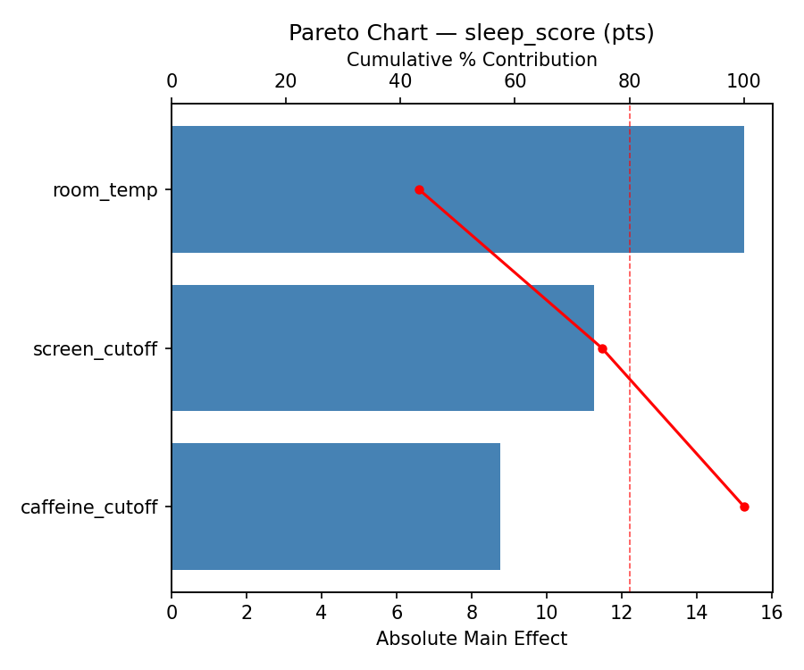
Main Effects Plot

Normal Probability Plot of Effects
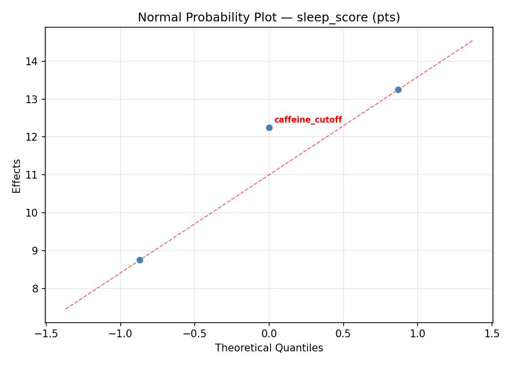
Half-Normal Plot of Effects
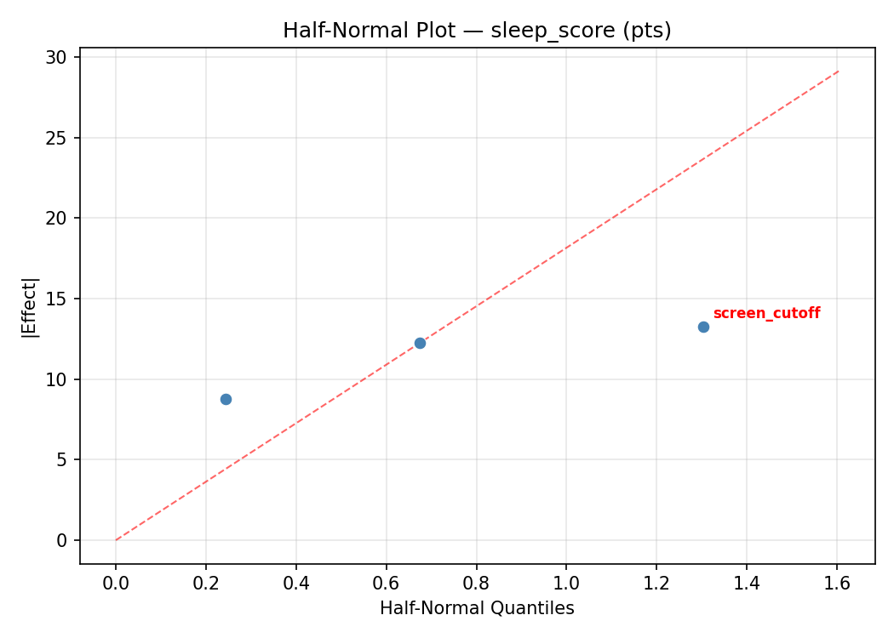
Model Diagnostics
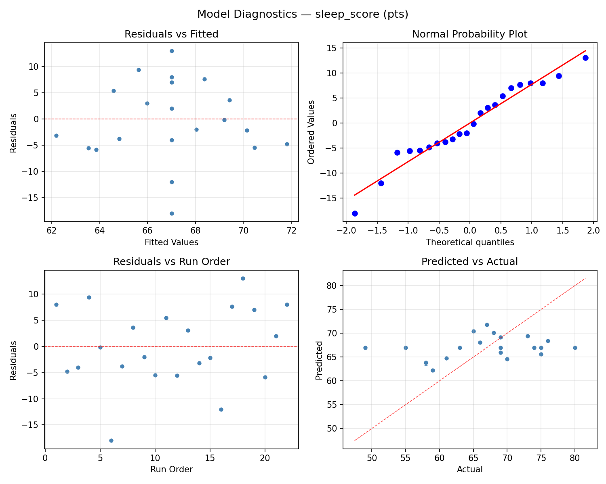
Response: wake_count
Top factors: screen_cutoff (37.9%), caffeine_cutoff (33.5%), room_temp (28.6%).
ANOVA
| Source | DF | SS | MS | F | p-value |
|---|
| Source | DF | SS | MS | F | p-value |
| room_temp | 4 | 1.5336 | 0.3834 | 0.593 | 0.6768 |
| screen_cutoff | 4 | 2.3111 | 0.5778 | 0.893 | 0.5063 |
| caffeine_cutoff | 4 | 1.9036 | 0.4759 | 0.736 | 0.5905 |
| Lack | of | Fit | 2 | 3.1508 | 1.5754 |
| Pure | Error | 7 | 4.5287 | | |
| Error | 9 | 7.6795 | 0.6470 | | |
| Total | 21 | 13.4277 | 0.6394 | | |
Pareto Chart

Main Effects Plot
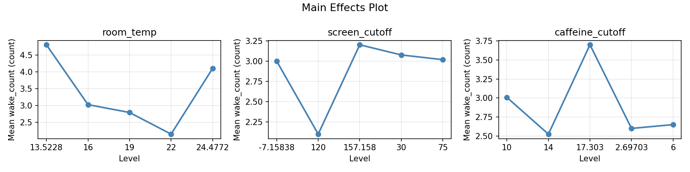
Normal Probability Plot of Effects
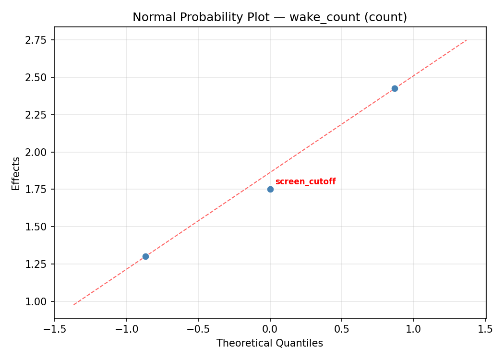
Half-Normal Plot of Effects
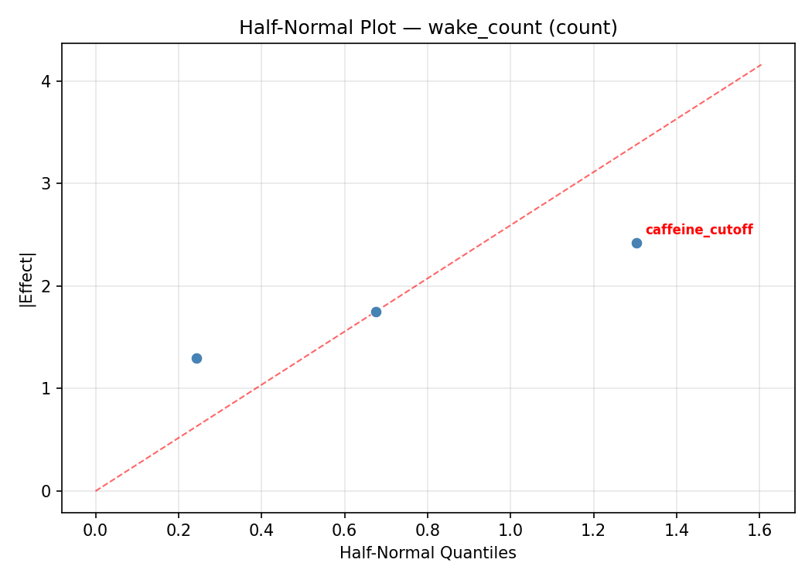
Model Diagnostics
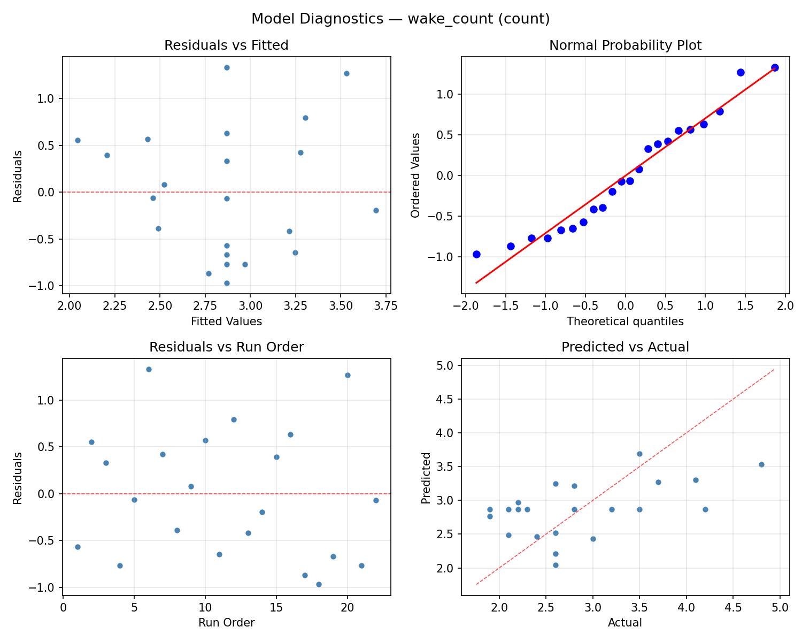
Response Surface Plots
3D surfaces fitted with quadratic RSM. Red dots are observed data points.
sleep score room temp vs caffeine cutoff
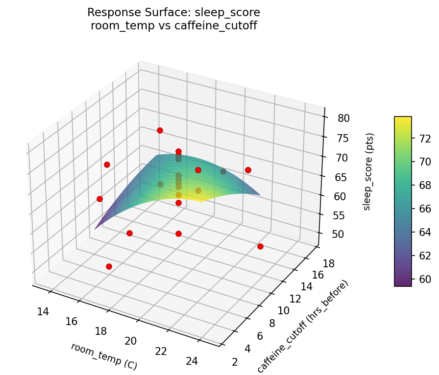
sleep score room temp vs screen cutoff
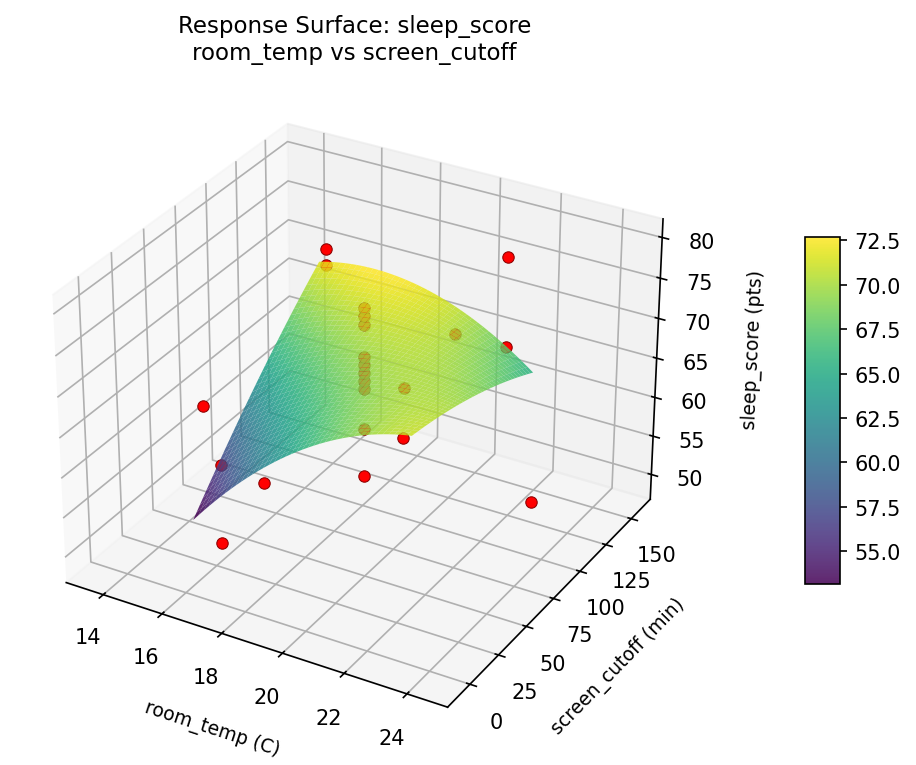
sleep score screen cutoff vs caffeine cutoff

wake count room temp vs caffeine cutoff
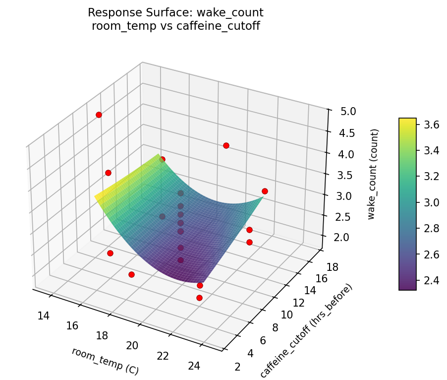
wake count room temp vs screen cutoff

wake count screen cutoff vs caffeine cutoff

Multi-Objective Optimization
When responses compete, Derringer–Suich desirability finds the best compromise.
Each response is scaled to a 0–1 desirability, then combined via a weighted geometric mean.
Overall Desirability
D = 0.9545
Per-Response Desirability
| Response | Weight | Desirability | Predicted | Dir |
|---|
sleep_score |
1.5 |
|
80.00 0.9545 80.00 pts |
↑ |
wake_count |
1.0 |
|
1.90 0.9545 1.90 count |
↓ |
Recommended Settings
| Factor | Value |
|---|
room_temp | 22 C |
screen_cutoff | 30 min |
caffeine_cutoff | 6 hrs_before |
Source: from observed run #18
Trade-off Summary
Sacrifice = how much worse than single-objective best.
| Response | Predicted | Best Observed | Sacrifice |
|---|
wake_count | 1.90 | 1.90 | +0.00 |
Top 3 Runs by Desirability
| Run | D | Factor Settings |
|---|
| #17 | 0.8823 | room_temp=19, screen_cutoff=75, caffeine_cutoff=17.303 |
| #4 | 0.8286 | room_temp=19, screen_cutoff=157.158, caffeine_cutoff=10 |
Model Quality
| Response | R² | Type |
|---|
wake_count | 0.1944 | linear |
Full Multi-Objective Output
============================================================
MULTI-OBJECTIVE OPTIMIZATION
Method: Derringer-Suich Desirability Function
============================================================
Overall desirability: D = 0.9545
Response Weight Desirability Predicted Direction
---------------------------------------------------------------------
sleep_score 1.5 0.9545 80.00 pts ↑
wake_count 1.0 0.9545 1.90 count ↓
Recommended settings:
room_temp = 22 C
screen_cutoff = 30 min
caffeine_cutoff = 6 hrs_before
(from observed run #18)
Trade-off summary:
sleep_score: 80.00 (best observed: 80.00, sacrifice: +0.00)
wake_count: 1.90 (best observed: 1.90, sacrifice: +0.00)
Model quality:
sleep_score: R² = 0.1334 (linear)
wake_count: R² = 0.1944 (linear)
Top 3 observed runs by overall desirability:
1. Run #18 (D=0.9545): room_temp=22, screen_cutoff=30, caffeine_cutoff=6
2. Run #17 (D=0.8823): room_temp=19, screen_cutoff=75, caffeine_cutoff=17.303
3. Run #4 (D=0.8286): room_temp=19, screen_cutoff=157.158, caffeine_cutoff=10
Full Analysis Output
=== Main Effects: sleep_score ===
Factor Effect Std Error % Contribution
--------------------------------------------------------------
caffeine_cutoff 16.5000 1.6775 41.0%
screen_cutoff 12.5000 1.6775 31.1%
room_temp 11.2500 1.6775 28.0%
=== ANOVA Table: sleep_score ===
Source DF SS MS F p-value
-----------------------------------------------------------------------------
room_temp 4 109.5000 27.3750 0.324 0.8552
screen_cutoff 4 139.3333 34.8333 0.412 0.7961
caffeine_cutoff 4 286.0833 71.5208 0.846 0.5303
Lack of Fit 2 173.2083 86.6042 1.024 0.4072
Pure Error 7 591.8750 84.5536
Error 9 765.0833 84.5536
Total 21 1300.0000 61.9048
=== Summary Statistics: sleep_score ===
room_temp:
Level N Mean Std Min Max
------------------------------------------------------------
13.5228 1 67.0000 0.0000 67.0000 67.0000
16 4 66.7500 3.8622 61.0000 69.0000
19 12 67.5000 9.5489 49.0000 80.0000
22 4 63.7500 6.8981 58.0000 73.0000
24.4772 1 75.0000 0.0000 75.0000 75.0000
screen_cutoff:
Level N Mean Std Min Max
------------------------------------------------------------
-7.15838 1 70.0000 0.0000 70.0000 70.0000
120 4 67.0000 5.1640 61.0000 73.0000
157.158 1 76.0000 0.0000 76.0000 76.0000
30 4 63.5000 5.8023 58.0000 69.0000
75 12 67.1667 9.4372 49.0000 80.0000
caffeine_cutoff:
Level N Mean Std Min Max
------------------------------------------------------------
10 12 66.4167 8.7017 49.0000 76.0000
14 4 67.0000 6.3770 58.0000 73.0000
17.303 1 75.0000 0.0000 75.0000 75.0000
2.69703 1 80.0000 0.0000 80.0000 80.0000
6 4 63.5000 4.4347 59.0000 69.0000
=== Main Effects: wake_count ===
Factor Effect Std Error % Contribution
--------------------------------------------------------------
screen_cutoff 1.5250 0.1705 37.9%
caffeine_cutoff 1.3500 0.1705 33.5%
room_temp 1.1500 0.1705 28.6%
=== ANOVA Table: wake_count ===
Source DF SS MS F p-value
-----------------------------------------------------------------------------
room_temp 4 1.5336 0.3834 0.593 0.6768
screen_cutoff 4 2.3111 0.5778 0.893 0.5063
caffeine_cutoff 4 1.9036 0.4759 0.736 0.5905
Lack of Fit 2 3.1508 1.5754 2.435 0.1575
Pure Error 7 4.5287 0.6470
Error 9 7.6795 0.6470
Total 21 13.4277 0.6394
=== Summary Statistics: wake_count ===
room_temp:
Level N Mean Std Min Max
------------------------------------------------------------
13.5228 1 2.6000 0.0000 2.6000 2.6000
16 4 2.8750 0.5737 2.4000 3.7000
19 12 2.7833 0.8032 1.9000 4.2000
22 4 3.3500 1.1269 2.1000 4.8000
24.4772 1 2.2000 0.0000 2.2000 2.2000
screen_cutoff:
Level N Mean Std Min Max
------------------------------------------------------------
-7.15838 1 2.6000 0.0000 2.6000 2.6000
120 4 2.8000 0.7071 2.1000 3.7000
157.158 1 1.9000 0.0000 1.9000 1.9000
30 4 3.4250 0.9946 2.6000 4.8000
75 12 2.8083 0.7775 1.9000 4.2000
caffeine_cutoff:
Level N Mean Std Min Max
------------------------------------------------------------
10 12 2.8333 0.7644 1.9000 4.2000
14 4 2.9750 1.2339 2.1000 4.8000
17.303 1 2.3000 0.0000 2.3000 2.3000
2.69703 1 1.9000 0.0000 1.9000 1.9000
6 4 3.2500 0.4203 2.8000 3.7000
Optimization Recommendations
=== Optimization: sleep_score ===
Direction: maximize
Best observed run: #18
room_temp = 19
screen_cutoff = 75
caffeine_cutoff = 10
Value: 80.0
RSM Model (linear, R² = 0.2000, Adj R² = 0.0666):
Coefficients:
intercept +67.0000
room_temp +4.1291
screen_cutoff +0.7443
caffeine_cutoff +0.3466
RSM Model (quadratic, R² = 0.3495, Adj R² = -0.1384):
Coefficients:
intercept +69.4605
room_temp +4.1291
screen_cutoff +0.7443
caffeine_cutoff +0.3466
room_temp*screen_cutoff +0.6250
room_temp*caffeine_cutoff +3.3750
screen_cutoff*caffeine_cutoff +1.3750
room_temp^2 -0.7303
screen_cutoff^2 -1.4803
caffeine_cutoff^2 -1.4802
Curvature analysis:
screen_cutoff coef=-1.4803 concave (has a maximum)
caffeine_cutoff coef=-1.4802 concave (has a maximum)
room_temp coef=-0.7303 concave (has a maximum)
Notable interactions:
room_temp*caffeine_cutoff coef=+3.3750 (synergistic)
screen_cutoff*caffeine_cutoff coef=+1.3750 (synergistic)
room_temp*screen_cutoff coef=+0.6250 (synergistic)
Predicted optimum (from linear model, at observed points):
room_temp = 24.4772
screen_cutoff = 75
caffeine_cutoff = 10
Predicted value: 74.5387
Surface optimum (via L-BFGS-B, linear model):
room_temp = 22
screen_cutoff = 120
caffeine_cutoff = 14
Predicted value: 72.2200
Model quality: Weak fit — consider adding center points or using a different design.
Factor importance:
1. room_temp (effect: 14.0, contribution: 37.3%)
2. screen_cutoff (effect: 12.5, contribution: 33.3%)
3. caffeine_cutoff (effect: 11.0, contribution: 29.3%)
=== Optimization: wake_count ===
Direction: minimize
Best observed run: #17
room_temp = 22
screen_cutoff = 120
caffeine_cutoff = 6
Value: 1.9
RSM Model (linear, R² = 0.1461, Adj R² = 0.0038):
Coefficients:
intercept +2.8682
room_temp -0.3311
screen_cutoff +0.1520
caffeine_cutoff -0.0323
RSM Model (quadratic, R² = 0.2865, Adj R² = -0.2486):
Coefficients:
intercept +2.6800
room_temp -0.3311
screen_cutoff +0.1520
caffeine_cutoff -0.0323
room_temp*screen_cutoff -0.0875
room_temp*caffeine_cutoff -0.3125
screen_cutoff*caffeine_cutoff -0.0625
room_temp^2 -0.0359
screen_cutoff^2 +0.1591
caffeine_cutoff^2 +0.1591
Curvature analysis:
screen_cutoff coef=+0.1591 convex (has a minimum)
caffeine_cutoff coef=+0.1591 convex (has a minimum)
room_temp coef=-0.0359 negligible curvature
Notable interactions:
room_temp*caffeine_cutoff coef=-0.3125 (antagonistic)
Predicted optimum (from linear model, at observed points):
room_temp = 13.5228
screen_cutoff = 75
caffeine_cutoff = 10
Predicted value: 3.4727
Surface optimum (via L-BFGS-B, linear model):
room_temp = 22
screen_cutoff = 30
caffeine_cutoff = 14
Predicted value: 2.3528
Model quality: Weak fit — consider adding center points or using a different design.
Factor importance:
1. screen_cutoff (effect: 2.7, contribution: 47.6%)
2. caffeine_cutoff (effect: 1.6, contribution: 27.8%)
3. room_temp (effect: 1.4, contribution: 24.7%)